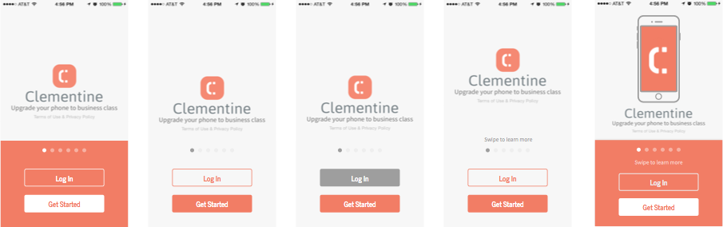

Clementine Iconography
Goal
The main project for revamping Clementine’s iconography started out as simply unifying stroke widths on the app’s tab bar. However, I realized that
Competitor Analysis
I pinpointed a few apps with onboarding flows that were great examples of the same high-level goals I wanted to achieve: complex interactions/ideas explained in a personable, interactive way.
-
 Carousel
Carousel -
 Inbox
Inbox -
 Instacart
Instacart -
 Periscope
Periscope -
 Pocket
Pocket -
 Slack
Slack
I’m also indebted to Sam Hulick’s Onboarding Teardowns.
Concepts & Sketching
I start every project with some quick sketches to get feedback from the team about the direction I’m taking without letting visuals interfere with critique. However, sketches for this project progressed to a more detailed state than usual since our onboarding is heavily visual. I wanted to outline illustrations/interactions before I moved to Sketch and Framer since redoing them would be incredibly time-consuming.
While sketching, I kept in mind that:
- While Clementine is an enterprise product, it’s still a consumer-facing product. The language and tone should reflect that.
- Clementine has a wide range of customers (some who are focused on the messaging aspect, others focused on secure communications, etc.), so each of the highlighted features needs to shine, as well as fit into the overarching product story.
- Customers vary in terms of how they go through onboarding. Some want to sign up right away. Some need to be wined and dined. Some don’t care about your animations. The pacing of onboarding should be flexible, and actionable targets should exist throughout.
Mockups

Storyboarding in Sketch quickly made it clear that:
- My idea to convey how Clementine separates your work and personal life was too subtle. The illustrations for work life and home life didn’t provide enough contrast to emphasize this feature effectively.

- My idea to feature secure messaging, however, was too over-the-top. The animations and illustrations I had planned would either obscure text or too strictly control pacing for users through the onboarding flow.

Prototyping
After tweaking my designs, I hopped into Framer (for the first time ever to seriously work on a project). The design team at Clementine traditionally used Pixate and Flinto for interaction prototyping, but I felt the animations for onboarding were complex enough to warrant finally getting my hands dirty with Framer.
See it live!
Warning: dirty code
Final Design
Merp
Next Steps & Lessons Learned
Merp
- Created file organization in Dropbox.